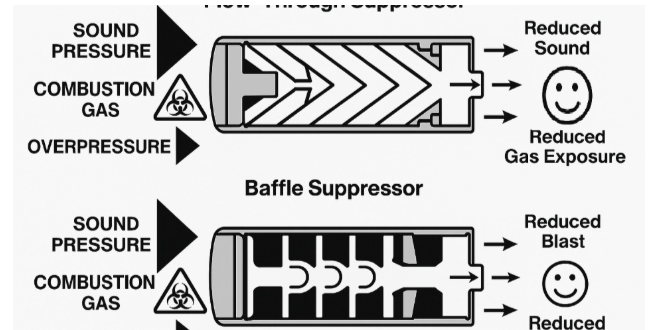

Why This Topic Matters
As we approach the removal of the $200 NFA tax stamp and as suppressors become more accessible, it's worth revisiting what these devices actually are, and what they are not. With the financial barrier — originally set at a level intended to discourage civilian purchases back in 1934 — now disappearing, I think it's important to highlight the true purpose, function, and safety benefits suppressors provide. Despite how Hollywood and video games portray them, suppressors are not heat-defying, whisper-quiet spy tools. They are firearm accessories designed to protect the operator and those nearby by reducing sound pressure, concussion, and harmful gas exposure. As suppressors become more common, understanding them as safety devices, not magical tools of the spy trade, becomes increasingly important for responsible firearms ownership and thoughtful policy discussion. This discussion focuses on what suppressors are and explores whether existing regulatory assumptions align with modern health and safety data.
What Suppressors Actually Do
The modern suppressor traces its history back to the early 1900s. Created by Hiram Percy Maxim, the son of Maxim machine gun inventor, developed the first commercially successful suppressor for reducing noise on hunting rifles and even worked for noisy household plumbing and engines. At the time, society understood that they served a primary role as a tool for noise reduction and improved shooting comfort. It wasn't until the National Firearms Act (NFA) of 1934 that suppressors became culturally and formally regulated as a restricted item. For most of their history, suppressors mirrored the Maxim Silencer design of baffle stacking. That remained the industry standard until the rise of advanced 3D printing, which introduced a new category: the flow-through suppressor. Instead of using a series of baffles to slow and trap expanding gas, flow-through models use internal gas channels, purposely engineered mazes, to guide pressure forward and away from the shooter. Today's suppressor will either fall into the traditional baffle design or use the modern flow-through systems.
Despite popular portrayals, suppressors do not make firearms quiet. Before owning my first one, I also assumed what John Wick and video games so often show: compact devices that make gunfire near-silent, quiet enough for a secret gun battle in a crowded subway without anyone noticing. The real-world physics tell a different story. A suppressor reduces the intense sound pressure and concussion produced when a firearm is discharged, but even the best suppressors leave a firearm's shot extremely loud. An unsuppressed rifle typically measures 165–170 decibels, similar to the sound of a rocket engine and far above OSHA's 140 dB threshold for instant and permanent hearing injury. According to manufacturers and third-party tests by PewScience, a top of the line suppressor can reduce that to roughly 135–140 dB. That is the equivalent to standing 10 feet from a train horn or 100 feet from a jet engine. This is still dangerously loud and still requires hearing protection, but the reduction meaningfully improves safety for shooters and bystanders alike.
That 25–35 dB reduction is not merely about comfort, it directly affects the long-term health of those around firearms. Impulse noise at firearm levels can cause hearing damage from a single exposure, and repeated shots amplify the risk. By lowering the peak pressure, suppressors keep emergent shots and training sessions within a range that is more survivable for human hearing. Hearing loss is not the only concern for those who shoot often. Suppressors also reduce the concussion and blast waves at the muzzle, an often overlooked but important benefit.
Research from the Department of Veteran Affairs shows that repeated exposure to concussive blast, even at levels common in routine firearms training, can contribute to micro-TBIs (mild traumatic brain injuries). These micro-TBIs can produce symptoms that include memory issues, headaches, concentration problems and emotional dysregulation. Civilian shooters now spend more time on ranges than many service members do, which makes these health considerations relevant to the broader public as well.
As a left-handed shooter myself, gas mitigation is just as important for comfort as it is for long-term health. Most modern firearms are engineered to vent excess gas to the right — no issue for right-handed shooters, but for me it goes directly into my face. Many times in the Army, I left the firing line with a fresh coat of warpaint on my face in the form of burned CLP and carbon. The gas produced when shooting contains lead, carbon monoxide, carbon dioxide, nitrogen oxides, copper and zinc particulates, and other combustion byproducts. None of these are substances anyone wants in their lungs or eyes. Short-term exposure can cause dizziness, nausea, respiratory irritation, and shortness of breath; long-term exposure increases the risk of neurological issues and even certain cancers.
Flow-through suppressors directly address this problem. They represent one of the most meaningful safety improvements in modern firearms technology. Instead of trapping gas and venting a portion backward toward the shooter — as traditional baffle designs often do — flow-through suppressors use internal channels to push pressure and toxic gases forward, away from the user's face. This greatly reduces inhalation of harmful particulates and protects long-term respiratory and neurological health. When paired with proper rifle tuning, a shooter can achieve virtually zero gas blowback.
For left-handed shooters, instructors, high-volume trainers, or anyone spending extended time on a range, especially indoors, flow-through suppressors materially enhance safety for everyone present.
The takeaway being, that a suppressor doesn't turn someone into a movie assassin, and it doesn't make a firearm quiet. What it does do is reduce preventable hearing loss and mitigate long-term brain trauma for shooters and everyone around them.
How the Law Classifies Suppressors: Accessory, Not Firearm
A suppressor's physical make-up is just a well-engineered tube of aluminum, Inconel, stainless steel or titanium. It is incapable of firing a projectile and is no more inherently dangerous on its own than a can of soup, yet suppressors are forced into the same realm of heavy regulation shared with traditional firearms within the US. Under federal law, a suppressor is not treated as a firearm but as an accessory since they contain no firing mechanism, no chamber, and no ability to discharge a projectile; facts often cited in arguments that suppressors themselves are not protected arms under the Second Amendment. Courts, including the Supreme Court, have repeatedly recognized suppressors as accessories rather than weapons.
This concept is at odds with other products that are not treated with such caution and induces a natural comparison. If suppressors are regulated as dangerous devices, should telescopes or magnified optics be treated similarly? Popular media often suggests that high-powered optics turn any user into a "sniper," yet no serious policy proposal treats scopes as weapons. An optic improves sight picture and accuracy, while a suppressor moderates pressure and blast at the muzzle, but neither enables a firearm to function — they merely alter how it is used. Despite this incongruency, under the National Firearms Act (NFA), a gun accessory designed largely for safety and comfort is regulated in the same category as machine guns and destructive devices.
The current classification framework reflects policy choices made nearly a century ago, rather than the actual mechanical characteristics of suppressors or the role they play in modern safety practices. The gap between definition and regulations is worth examining as technology evolves.
To understand the regulatory structure, we must look back nearly a century to 1934 and the historical environment that might have forced contemplation of suppressor regulation. The NFA was enacted during a period of heightened concern about organized crime, machine gun violence, and illegal hunting during the Great Depression. Suppressors were included in the regulatory act, not because of scientific evidence, or use by mobster assassins, but due to fears that poachers would use them to take game without detection. Policymakers believed at the time that a $200 ($4,800 in 2025) tax stamp represented a prohibitive cost and was designed to discourage ownership.
The NFA predates OSHA, modern acoustic science, FBI and ATF crime statistics, and decades of research on hearing loss and blast exposure. Policymakers in 1934 had no way to anticipate the public health implications of repeated high-decibel noise or the neurological effects of overpressure. As a result, modern perception is still shaped by the magic of Hollywood in what a suppressor does and the belief that regulation is truly preventing crime, when in reality it is contributing to both short and long-term health issues for a wide sector of the American public.
Why This Is a Public Health Conversation, not a Political One
Setting aside cinematic portrayals and misconceptions on what suppressors are and how they are used, this issue should and can be viewed through the lens of preventative health measures that include hearing protection, respiratory safety, and overpressure exposure. When evaluating their regulation in this way, suppressors resemble personal protective equipment more than a dangerous accessory needing to be regulated through exorbitant costs and burdensome paperwork meant to deter ownership.
Millions of Americans — veterans, law enforcement, recreational shooters, hunters, instructors and even local community members — are affected by preventable health issues related to firearm noise and blast exposure. This article does not argue for any political action but is meant to highlight the value of periodically revisiting policies as more data becomes available.
Sound policy should be informed by evidence, research, and measurable outcomes, not cinematic depictions or cultural assumptions. The growing body of data surrounding suppressor use and health outcomes suggests that restricting a modern, safety-oriented accessory does not align with the best interest of public health. A suppressor is a firearm accessory that can reduce preventable injuries and improve safety for veterans, law enforcement and communities. At a minimum, it deserves a renewed evaluation grounded in facts, not movies.